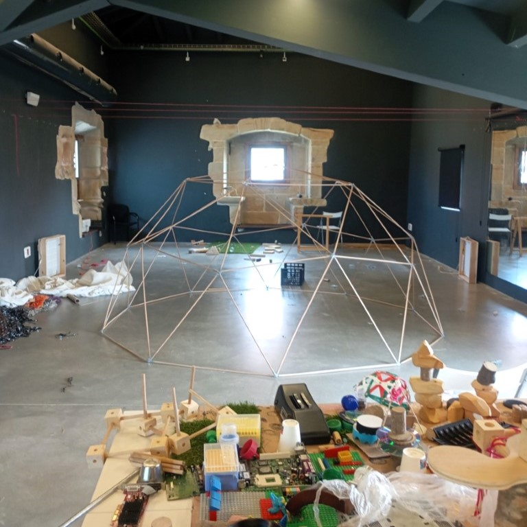

Consultar
Duomo sube de nivel nuestra destreza con la construcción: un domo geodésico donde dentro cabe un mundo de posibilidades para los niños y niñas a partir de 8 años. Cada construcción es una experiencia: una cúpula que invita a explorar la geometría, la estabilidad y la imaginación.
Su alternativa: construir dos Domikos independientes, y disfrutar de dos pequeños refugios para inventar historias, esconderse o simplemente jugar a habitar el espacio.
Dentro de Duomo, la creatividad y la arquitectura se mezclan: una cúpula que es laboratorio, casa, fuerte o escenario de infinitas aventuras, ¿quizás una torre?
Recomendado desde los 8 años. Es ideal para propuestas de arquitectura, STEAM y construcción cooperativa en aula, campus o familia.
La cúpula geodésica 2V es la construcción principal, pero también pueden montarse dos Domikos independientes o una torre.
No. Todo se ensambla a mano con conectores de acero y pvc, sin tornillos ni pegamento.
Los kits se producen de forma artesanal en el taller de Coloniales. Escríbenos por WhatsApp para informarte de disponibilidad y precios.
Si tienes dudas sobre el kit, cómo funciona o quieres saber más, escríbenos por WhatsApp.